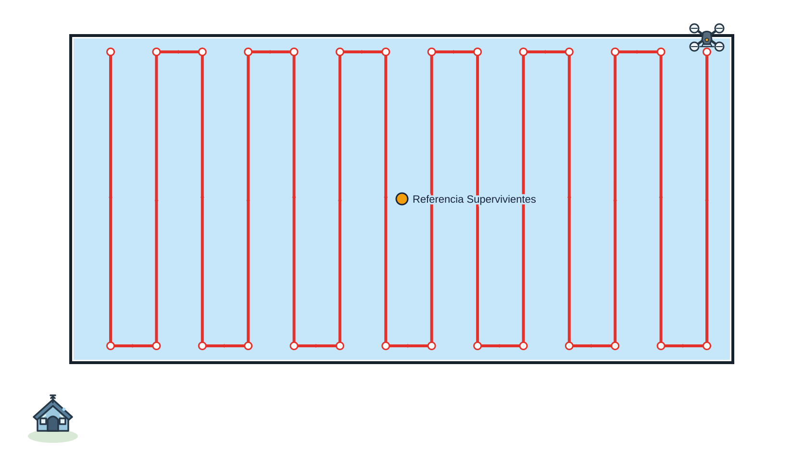
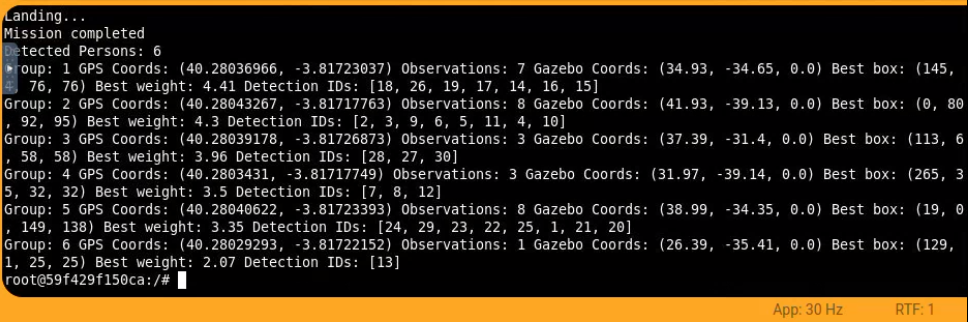

Búsqueda autónoma y localización de supervivientes mediante un dron y visión artificial.
Objetivo
El objetivo de esta práctica es desarrollar un sistema autónomo capaz de localizar supervivientes en el mar utilizando un dron equipado con una cámara ventral.
El dron debe desplazarse hasta la zona en la que se tiene el último contacto con el avión, realizar un barrido alrededor de esa zona, detectar las caras de las personas y estimar sus coordenadas geográficas
para facilitar su rescate.
La práctica se ha desarrollado mediante una máquina de estados, para separar las etapas del programa,
el estado determina qué accion debe realizar el drone en cada iteración:
Estado
Comportamiento
IDLE
Inicialización de la misión.
TAKE_OFF
Orden de despegue y espera hasta alcanzar la altura nominal.
GO_TO_SURVIVORS
Desplazamiento al waypoint de referencia facilitado en el ejercicio.
BARRIDO
Seguimiento de los waypoints y procesamiento de la cámara ventral.
RETURN
Regreso definitivo a la posición inicial.
DONE
Orden de aterrizaje y fin del programa.
BATTERY_LOW
Interrupción de la navegación para regresar a la base.
CHARGING
Aterrizaje y recarga simulada; posterior reanudación del barrido.
La secuencia habitual es IDLE → TAKE_OFF → GO_TO_SURVIVORS → BARRIDO → RETURN → DONE. Cuando la batería se encuentra al 25% o menos,
se pasa por los estados BATTERY_LOW (que lleva el drone a la base) y CHARGING (que carga el drone) antes de continuar desde el waypoint pendiente.
1. Control del dron por posición
1.1. Sistemas de coordenadas
La posición de referencia se proporciona en coordenadas geográficas/UTM, mientras que el dron recibe objetivos en el sistema local de Gazebo. Por eso se han creado funciones de conversión, entre ellas utm2gzb() para transformar la referencia de búsqueda y gzb2gps() para convertir las posiciones detectadas a latitud y longitud.
1.2. Navegación entre objetivos
La función move2waypoint() lee la posición actual del dron con HAL.get_position() y envía el objetivo mediante HAL.set_cmd_pos(x, y, z, yaw). No se controla directamente la velocidad: se indica una pose objetivo y el controlador de la simulación se encarga del movimiento hacia ella.
El waypoint se considera alcanzado cuando tanto el error horizontal como el error vertical son inferiores a 0,75 m. La altura de vuelo es de 5 m.
HAL.set_cmd_pos(x, y, z, yaw)
arrived = math.hypot(x - pos[0], y - pos[1]) <= d_tolerance and abs(z - pos[2]) <= d_tolerance
2. Planificación del barrido
2.1. Del waypoint de referencia a la zona de búsqueda
El ejercicio proporciona un punto de referencia próximo a los supervivientes. En lugar de tratarlo como la posición exacta de una persona, se utiliza para generar un rectángulo de búsqueda que cubra el área donde pueden aparecer.
El punto queda en el interior del rectángulo, aproximadamente en el centro.
Este rectángulo tiene una longitud de 30 m y un ancho de 25 m.
Para recorrer la zona se utiliza una trayectoria de en "zigzag". La función generate_waypoints_barrido() divide la anchura de la región en carriles y calcula dos waypoints por carril, situados en sus extremos longitudinales. En cada carril se invierte el sentido del recorrido para enlazar con el siguiente.
Con una separación de 2 m entre carriles se generan 14 carriles y 28 waypoints. La última separación es de 1 m para ajustarse a los 25 m. La distancia entre los dos extremos de cada carril es de 30 m.

Esquema del barrido generado por el código.
2.3. Ejecución de la trayectoria
El índice waypoint_index señala el siguiente waypoint objetivo. El programa solo incrementa el índice cuando move2waypoint() confirma su llegada. Así, el barrido se ejecuta de forma secuencial y puede reanudarse después de recargar la bateria sin perder los waypoints ya completados.
3. Detección de personas mediante visión artificial
3.1. Captura y preprocesamiento
Durante el estado BARRIDO se captura la imagen de la cámara ventral. La imagen se gira hasta 180° de acuerdo con la orientación elegida para su procesamiento. A continuación se convierte a escala de grises y se ecualiza el histograma,
lo que permite trabajar con el contraste de las caras antes de aplicar el clasificador.
Se utiliza un detector frontal de caras Haar Cascade de OpenCV. Como las personas flotan en distintas orientaciones, una única ejecución del clasificador sobre la imagen original puede no detectar todas las caras. Para solucionarlo se rota la imagen en intervalos de 30° y se ejecuta detectMultiScale3() sobre cada orientación.
El resultado de una rotación se expresa en coordenadas de la imagen girada. Por ello, el centro de cada rectángulo se transforma de vuelta a la imagen original mediante la inversa de la transformación afín. El detector aporta también una puntuación weight, que se utiliza para filtrar y ordenar las detecciones: no es un porcentaje de probabilidad.
Durante las pruebas se observaron falsos positivos asociados al fondo marino. Para reducirlos, se examina cada región candidata en el espacio de color HSV y se identifica qué proporción de sus píxeles se encuentra dentro del intervalo de azul definido en el programa. Si la proporción alcanza el 80 %, se descarta la región al considerar que es principalmente agua.
Una misma persona puede detectarse varias veces al analizar las diferentes rotaciones. Las regiones candidatas se ordenan por weight y se comprueba la distancia entre sus centros; cuando dos detecciones están demasiado próximas en relación con el tamaño de sus rectángulos, se conserva únicamente la de mayor puntuación. El proceso de detección se ejecuta cada tres iteraciones del bucle, evitando analizar todas las imágenes capturadas.
4. Estimación de coordenadas y agrupación
4.1. De la detección en píxeles a la posición en Gazebo
El rectángulo de una cara proporciona su posición en píxeles. Se calcula su centro y el desplazamiento con respecto al punto principal de la cámara. A partir de los parámetros intrínsecos obtenidos del modelo del dron (fx = fy ≈ 282,80 píxeles, cx = 160, cy = 120) se estima el desplazamiento sobre el plano utilizando la altura de vuelo y la distancia focal. De este modo, la escala en metros por píxel depende de la altura, en vez de ser una constante fija.
La posición estimada en Gazebo se convierte a coordenadas GPS con gzb2gps(). La fórmula utilizada es aproximada: presupone un plano de altura conocida y conserva la correspondencia de ejes implementada en el proyecto, sin compensar todavía de forma completa la inclinación y orientación instantáneas del dron.
4.2. Filtrado de posiciones no válidas
Antes de almacenar una observación se comprueba que sus coordenadas estimadas pertenezcan a la región de interés. Este filtro se añadió después de observar detecciones espurias cerca de la base de despegue en algunas ejecuciones.
if not (18 <= person_x <= 49 and -44 <= person_y <= -28):
return
Este filtro de aceptación es más reducido que la zona de vuelo del último barrido (30 × 25 m); por tanto, excluye deliberadamente observaciones fuera de esos límites aunque el dron las atraviese.
4.3. Agrupación espacial y seguimiento durante el barrido
Una persona puede generar varias detecciones en fotogramas sucesivos. Para no contabilizarlas como personas distintas, las observaciones se agrupan por proximidad GPS utilizando la distancia de Haversine. Se ordenan por weight y se asocian al grupo más cercano si la separación es inferior a 3,1 m. Cada grupo conserva como referencia la detección mejor puntuada.
La agrupación se ejecuta tanto durante el barrido como al finalizar la misión. En tiempo de ejecución se imprime el número de grupos provisionales encontrados hasta ese momento, sus coordenadas GPS y Gazebo y el número de observaciones de cada uno. Estos grupos pueden cambiar conforme se incorporan nuevas detecciones; no implican reconocimiento individual de identidad.
5. Gestión de batería y recuperación del recorrido
Como ampliación se implementó un modelo de batería virtual, en cada iteración, disminuye un 0.003%.
Cuando el nivel llega al 25 % se ordena el regreso a la base mediante BATTERY_LOW. En CHARGING se solicita el aterrizaje, se espera una recarga simulada de cinco segundos y se restablece la batería al 100 %. Después se realiza un nuevo despegue y se continúa desde el waypoint_index pendiente.
La recarga es una simulación temporal, no una medida física de consumo.
Resultados y conclusiones
1. Resultados de localización
Se adjunta un video de una de las ejecuciones del programa:
En esta ejecición, el programa terminó con 6 personas detectadas. Al comparar las posiciones estimadas con las coordenadas
estimadas de las 6 personas en Gazebo, cada grupo puede asociarse por proximidad a un superviviente diferente.

Resultados de la ejecución utilizada para evaluar la precisión de las posiciones estimadas.
Grupo
Posición Gazebo (X, Y)
Posición GPS (latitud, longitud)
1
(34,51; −35,66)
(40.28036589; -3.81721851)
2
(38,98; −34,65)
(40.28040610; -3.81720339)
3
(25,71; −35,08)
(40.28028677; -3.81722537)
4
(32,06; −38,18)
(40.28034388; -3.81718880)
5
(35,54; −31,39)
(40.28037519; -3.81726889)
6
(41,41; −39,82)
(40.28042795; -3.81716947)
2. Conclusiones
El programa desarrollado consigue realizar de forma autónoma un barrido rectangular de la zona de búsqueda,
tomando como referencia la posición estimada de los supervivientes proporcionada en el enunciado, que se sitúa
aproximadamente en el centro de la región explorada. A partir de este punto, se genera una trayectoria en zigzag
mediante waypoints que permite recorrer la zona, manteniendo la altura de vuelo constante.
Durante el recorrido, el dron consigue detectar y localizar a los seis supervivientes presentes en el escenario
mediante el procesamiento de las imágenes de su cámara ventral, combinando el detector Haar Cascade, la rotación de
imágenes y el filtrado de regiones correspondientes al agua permite detectar caras con diferentes orientaciones y
reducir los falsos positivos. Además, la agrupación de las observaciones evita contabilizar varias veces a la misma persona.
Los resultados obtenidos muestran que el sistema es capaz de estimar las coordenadas de los seis supervivientes
tanto en Gazebo como en GPS. Además, la implementación de una máquina de estados permite gestionar las diferentes
fases de la misión, incluyendo el regreso a la base y la reanudación del barrido cuando se produce una interrupción
por batería baja.
Como posibles mejoras, se podría incorporar la orientación del dron y de la cámara al cálculo de las posiciones para
aumentar la precisión de las posiciones, también se podría mejorar el procesamiento de las imágenes y la detección de
caras, puesto que en algunos momentos, la detección se muestra con cierto delay en la imagen.